1. B树
1.1 定义
B树是多路平衡查找树、自平衡树
即“阶”定义为一个节点的子节点数目的最大值
m阶B-树的定义:其中m>2，m的大小取决于磁盘页的大小
1.非叶子节点的根节点至少有2个孩子
2.每个非根和非叶子节点的节点至少有ceil(m/2)(ceil向上取整)个孩子，至多有M个孩子
3.每个非根和非叶子节点的节点至少有ceil(m/2-1)个关键字，至多有m-1个关键字，且以升序排列
4.所有叶子节点都在同一层
1.2 B-树的查找
B-树的查找类似二叉排序树的查找，所不同的是B-树每个结点上是多关键码的有序表，在到达某个结点时，先在有序表中查找，若找到，则查找成功；否
则，到按照对应的指针信息指向的子树中去查找，当到达叶子结点时，则说明树中没有对应的关键码。
在B-树中进行查找包含两种基本操作:
(1) 在B-树中查找结点；
(2) 在结点中查找关键字。
由于B-树通常存储在磁盘上，则前一查找操作是在磁盘上进行的，而后一查找操作是在内存中进行的，即在磁盘上找到指针p所指结点后，先将结点中的信
息读入内存，然后再利用顺序查找或折半查找查询等于K的关键字。显然，在磁盘上进行一次查找比在内存中进行一次查找的时间消耗多得多。因此，在磁
盘上进行查找的次数、即待查找关键字所在结点在B-树上的层次树，是决定B树查找效率的首要因素
1.3 B树的插入
首先通过查找确定插入的位置。然后在恰当的叶子结点中添加关键码，如果该结点中关键码不超过m-1个，则插入成功。否则要把这个结点分裂为两个。并
把中间的一个关键码拿出来插到结点的父结点里去。父结点也可能是满的，就需要再分裂，再往上插。最坏的情况，这个过程可能一直传到根，如果需要分
裂根，由于根是没有父结点的，这时就建立一个新的根结点。插入可能导致B-树朝着根的方向生长。
如下图所示为3阶的B-树(图中略去叶子结点)，假设需依次插入关键字30，26，85。
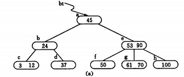
插入30，如下图所示
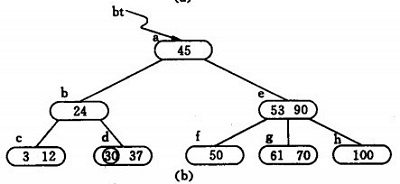
插入26，如下图依次所示
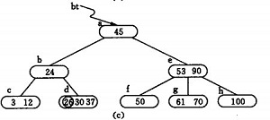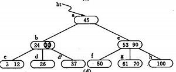
插入85，如下图依次所示
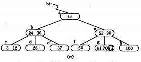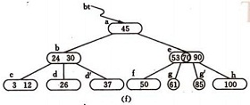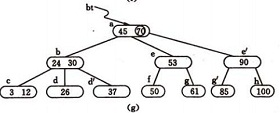
1.4 B树的删除
与插入关键字相反，若在B-树上删除一个关键字，则首先应找到该关键字所在结点，并从中删除。
1.4.1 假若所删关键字所在结点并非最下层的非终端结点
假设待删关键字为Ki，此时可以用Ai所指子树中的最小关键字X替代，然后删除关键字X即可。例如，在下图中删除45，可以用f结点中的50代替45，然后在f结点中删除50。
删除50后的B-树如下图所示
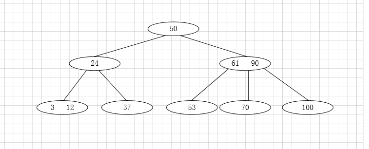
1.4.2 若该结点为最下层的非终端结点，且其中的关键字数目不少于ceil(m/2)，则删除完成，否则要进行“合并”结点的操作
合并可以分为下面三种情况去处理（算出结点关键字的取值范围，只要是不在范围内就进行合并操作，3阶B-树关键字的范围为[1,2]）
(1)被删关键字所在结点中的关键字数目不小于ceil(m/2)，则只需从该结点中删去该关键字Ki和相应指针Ai，树的其它部分不变，例如，从1.4.1图(a)所示
B-树中删去关键字12，删除后的B-树如下图所示：
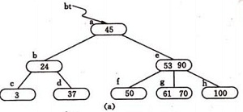
(2)被删关键字所在结点中的关键字数目等于ceil(m/2)-1，而与该结点相邻的右兄弟(或左兄弟)结点中的关键字数目大于ceil(m/2)-1，则需将其兄弟结点中的
最小(或最大)的关键字上移至双亲结点中，而将双亲结点中小于(或大于)且紧靠该上移关键字的关键字下移至被删关键字所在结点中。例如，从1.4.1图(a)中
删去50，需将其右兄弟结点中的61上移至e结点中，而将e结点中的53移至f，从而使f和g中关键字数目均不小于ceil(m-1)-1，而双亲结点中的关键字数目不变，结果如下图所示。
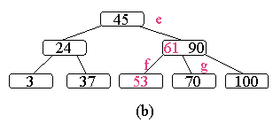
思考：就(2)结果图的B-树中删去关键字24之后，B-树的形状，文章最后给出。
(3)被删关键字所在结点和其相邻的兄弟结点中的关键字数目均等于ceil(m/2)-1。假设该结点有右兄弟，且其右兄弟结点地址由双亲结点中的指针Ai所指，则
在删去关键字之后，它所在结点中剩余的关键字和指针，加上双亲结点中的关键字Ki一起，合并到 Ai所指兄弟结点中(若没有右兄弟，则合并至左兄弟结点
中)。例如，从(2)结果图所示 B-树中删去53，则应删去f结点，并将f中的剩余信息(指针“空”)和双亲e结点中的61一起合并到右兄弟结点g中。删除后的树如下图所示。
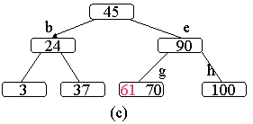
如果因此使双亲结点中的关键字数目小于ceil(m/2)-1，则依次类推。例如，在(3)结果图的B-树中删去关键字37之后，双亲b结点中剩余信息(“指针c”)应
和其双亲a结点中关键字45一起合并至右兄弟结点e中，删除后的B-树如图下所示。
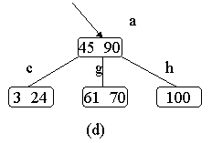
总结：
删除元素，移动相应元素之后，如果某结点中元素数目(即关键字数)小于ceil(m/2)-1，则需要看其某相邻兄弟结点是否丰满(结点中元素个数大于
ceil(m/2)-1)如果丰满，则向父节点借一个元素来满足条件；如果其相邻兄弟都刚脱贫，即借了之后其结点数目小于ceil(m/2)-1，则该结点与其相邻的某一兄弟结点进行“合并”成一个结点，以此来满足条件。
思考答案：
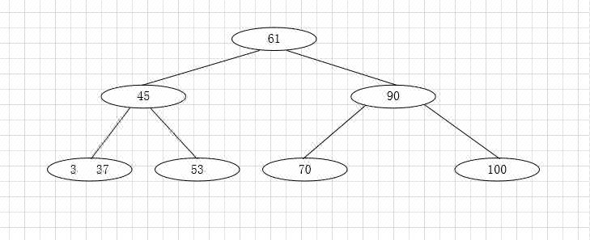